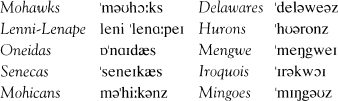
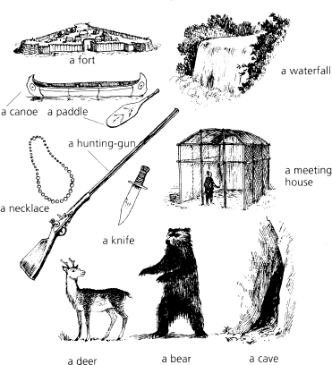

Listen to Part 1:
Địa điểm: Hồ Horican trên Sông Hudson. Tác giả đã gọi Hồ George bằng tên này. (Xem bản đồ). Hồ này nằm ở phía đông Bắc Mỹ. Ngày nay, khu vực này được gọi là Tiểu bang New York. Vào thời điểm câu chuyện này, Bắc Mỹ chưa giành được độc lập. Bắc Mỹ giành độc lập khỏi châu Âu vào năm 1787.
Thời gian: 1757. Quân đội từ Anh và Pháp đang giao tranh ở Bắc Mỹ. Cả hai quốc gia đều muốn giành đất.
Người dân bản địa đã sinh sống trên đất này hàng nghìn năm. Họ lấy thức ăn từ đất. Họ đánh cá ở các ao hồ và sông suối. Họ săn hươu, gấu và chim trong các khu rừng. Họ ăn thịt của những con vật này. Họ may quần áo từ da của chúng.
Có rất nhiều bộ lạc hoặc gia đình thổ dân khác nhau. Đây là một số bộ lạc sống gần Sông Hudson:

Năm 1607, người Anh đến Bắc Mỹ. Năm 1608, người Pháp đến. Họ săn bắn động vật. Họ lấy những tấm da mềm của các con vật mang về châu Âu.
Ngay sau đó, ngày càng có nhiều người châu Âu đến. Họ muốn chiếm đất của người bản địa. Các vị vua của Pháp và Anh đã cử quân đến Bắc Mỹ. Quân đội xây dựng các pháo đài kiên cố để ở. Quân đội mang theo súng. Người bản địa chiến đấu cho quân đội Anh và Pháp. Trong câu chuyện này, người Huron chiến đấu cho quân Pháp. Người Mohawk chiến đấu cho quân Anh.

Lưu ý: St là Saint (ví dụ như St Lawrence)